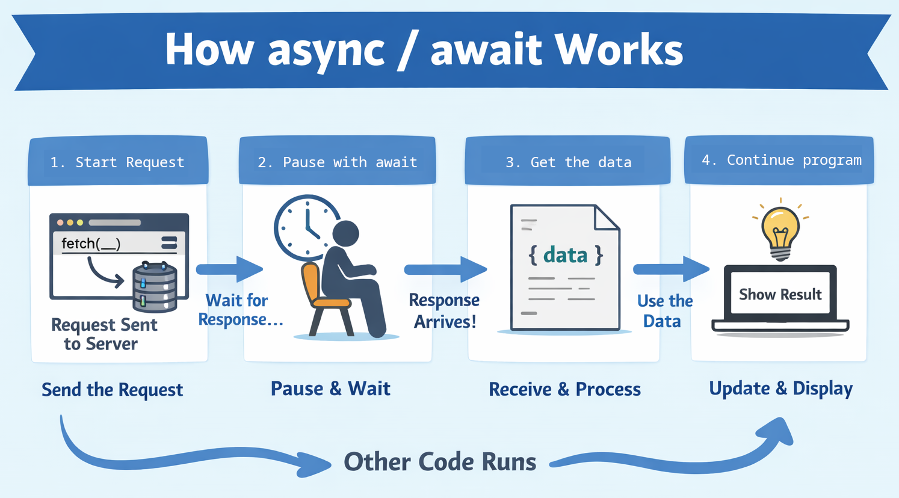

Data Fetching
Fetching is the process of requesting data from another location on the internet, usually from an API. In the browser, JavaScript provides a function called fetch that allows a web page to send a request and receive a response, such as loading information needed for the page. Because this takes time, fetch returns a Promise, which represents a result that will arrive later, and using async and await lets your code wait for that result in a clear, step-by-step way without freezing the page.

When using fetch with async and await, the code is written inside an async function. The program sends a request using fetch, then uses await to pause the function until a response is received. After the response arrives, it can be converted into usable data (such as JSON) and then used in the program. This approach keeps the code easy to read because it runs in a clear, step-by-step order.
Quiz
Test your understanding of how async and await work in JavaScript.
2 questions
Quiz Complete